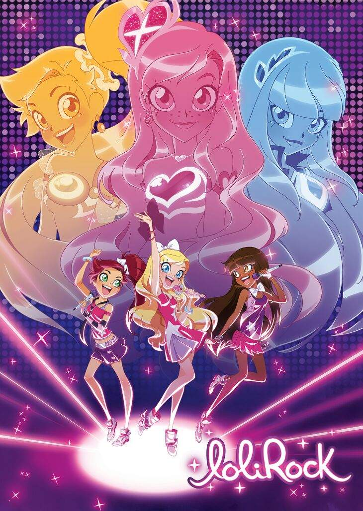
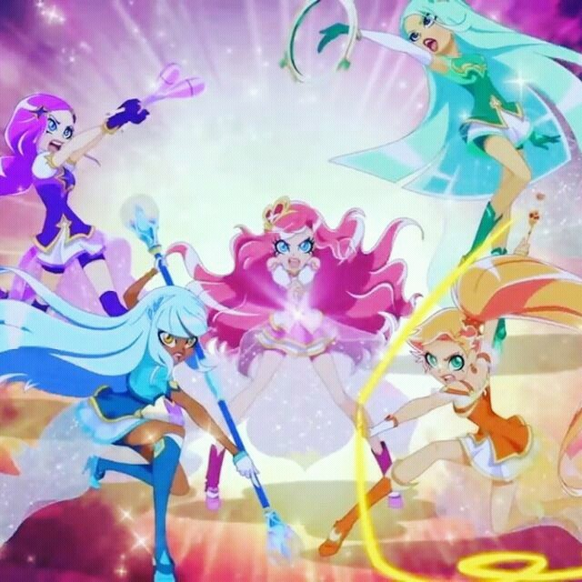
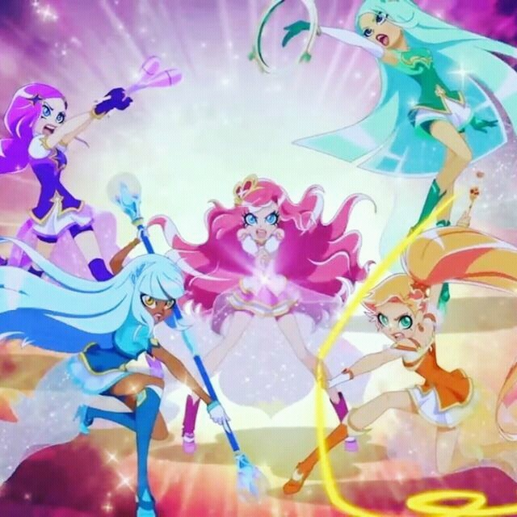

LoliRock è una serie animata francese creata da David Michel e Jean-Louis Vandestoc, prodotta dalla compagnia
Marathon Production ed è composta da 2 stagioni di 26 episodi ciascuna. La prima stagione è stata trasmessa
dal 18 ottobre 2014 sul canale France 4, invece la seconda stagione è stata diffusa prima via web ed in seguito
sempre sul canale France 4 dal 13 febbraio 2017.
In Italia la prima stagione è stata trasmessa in prima visione dal 22 novembre 2014 su DeA Kids ed in chiaro
dal 14 novembre 2015 su Super!. I primi 15 episodi della seconda stagione sono stati trasmessi in anteprima
mondiale su DeA Kids dal 5 al 23 settembre 2016, mentre i restanti episodi sono andati in onda nei primi mesi
del 2017. La seconda stagione è stata trasmessa in chiaro su Super! dal 13 maggio 2017.
Trama
Iris è una ragazza che vive a Sunny Bay ma, quando incontra Talia e Auriana, scopre di essere la principessa di Ephidia, un reame che lo stregone Gramorr sta tentando di conquistare. Per liberare Ephidia è necessario riunire i cristalli dell'oracolo o zaffiri della corona reale, dispersi sulla Terra. Insieme a Talia e Auriana, Iris si trasforma per combattere contro lo stregone e i suoi scagnozzi e recuperare gli zaffiri mancanti. Le tre ragazze formano anche il gruppo pop delle LoliRock al quale si aggiungeranno altre due ragazze a partire dalla seconda stagione.
Personaggi
Buoni
Principali
SecondariCattivi
- Carissa
- Lyna
- Amaru
- Nathaniel
Principali
Secondari
- Deinos e Zeinos
- Banes

 
